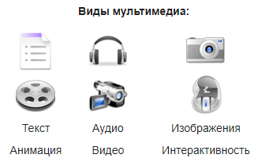
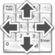

Мультимедиа

Мультимедиа — данные, или содержание, которые представляются одновременно в разных формах: звук, анимированная компьютерная графика, видеоряд. Например, в одном объекте-контейнере может содержаться, помимо текстовой — звуковая, графическая и видеоинформация, а также, возможно, — способ интерактивного взаимодействия с ней. Это достигается использованием определённого набора аппаратных и программных средств.
Термин мультимедиа также зачастую используется для обозначения носителей информации, позволяющих хранить значительные объёмы данных и обеспечивать достаточно быстрый доступ к ним (первыми носителями такого типа были компакт-диски). В таком случае термин мультимедиа означает, что компьютер может использовать такие носители и предоставлять информацию пользователю через все возможные виды данных, такие как аудио, видео, анимация, изображение и другие в дополнение к традиционным способам предоставления информации, таким как текст.
Классификация
Линейное

Нелинейное
Мультимедиа может быть грубо или тонко классифицирована как линейное и нелинейное.
Аналогом линейного способа представления может являться кино: человек, просматривающий данный документ никаким образом не может повлиять на его вывод.
Нелинейный (интерактивный) способ представления информации позволяет человеку участвовать в выводе информации, взаимодействуя каким-либо образом со средством отображения мультимедийных данных. Участие человека в данном процессе также называется «интерактивностью». Такой способ взаимодействия человека и компьютера наиболее полным образом представлен в категориях компьютерных игр. Нелинейный способ представления мультимедийных данных иногда называется «гипермедиа».
В качестве примера линейного и нелинейного способа представления информации можно рассматривать такую ситуацию, как проведение презентации. Если презентация была записана на плёнку и показывается аудитории, то при этом способе донесения информации просматривающие данную презентацию не имеют возможности влиять на докладчика. В случае же живой презентации аудитория имеет возможность задавать докладчику вопросы и взаимодействовать с ним прочим образом, что позволяет докладчику отходить от темы презентации, например поясняя некоторые термины или более подробно освещая спорные части доклада. Таким образом, живая презентация может быть представлена как нелинейный способ подачи информации.
Возможности
Презентации
Мультимедийные презентации могут быть проведены человеком на сцене, показаны через проектор или же на другом локальном устройстве воспроизведения. Широковещательная трансляция презентации может быть как «живой», так и предварительно записанной. Широковещательная трансляция или запись могут быть основаны на аналоговых или же электронных технологиях хранения и передачи информации. Стоит отметить, что мультимедиа в онлайне может быть либо скачана на компьютер пользователя и воспроизведена каким-либо образом, либо воспроизведена напрямую из интернета при помощи технологий потоковой передачи данных. Мультимедиа, воспроизводимая при помощи технологий потоковой передачи данных, может быть как «живая», так и предоставляемая по требованию.
Игры
Онлайн
(потоковые)
Мультимедийные игры — такие игры, в которых игрок взаимодействует с виртуальной средой, построенной компьютером. Состояние виртуальной среды передается игроку при помощи различных способов передачи информации (аудиальный, визуальный, тактильный). В настоящее время все игры на компьютере или игровой приставке относятся к мультимедийным играм. Стоит отметить, что в такой тип игр можно играть как в одиночку на локальном компьютере или приставке, так и с другими игроками через локальную или глобальную сети.
Различные форматы мультимедиа данных возможно использовать для упрощения восприятия информации потребителем. Например, предоставить информацию не только в текстовом виде, но и проиллюстрировать её аудиоданными или видеоклипом. Таким же образом современное искусство может представить повседневные, обыденные вещи в новом виде.
Различные формы предоставления информации делают возможным интерактивное взаимодействие потребителя с информацией. Онлайн-мультимедиа все в большей степени становится объектно-ориентированной, позволяя потребителю работать над информацией, не обладая специфическими знаниями. Например, для того, чтобы выложить видео на видеохостинге, пользователю не требуется знаний по редактированию видео, кодированию и сжатию информации, знаний по устройству веб-серверов. Пользователь просто выбирает локальный файл, и тысячи других пользователей видеосервиса имеют возможность просмотреть новый видеоролик.
Интернет-ресурс
Мультимедийный интернет-ресурс — сайт, в котором основная информация представлена в виде мультимедиа. Это современный и очень удобный механизм, который не заменяет собой выполнение классических функций, а дополняет и расширяет спектр услуг и новостей для посетителей.
Для мультимедийных интернет-ресурсов характерно:
могут содержать различные виды информации (не только текстовую, но и звуковую, графическую, анимационную, видео и т. д.);
высокая степень наглядности материалов;
поддержка различных типов файлов: текстовых, графических, аудио и видео;
возможность использования для продвижения творческих работ в области различных видов искусств.
Ресурс этого типа даёт возможность быстро сообщать о событиях, которые организуются, демонстрировать обзорный взгляд на сферу, учреждение или творческий коллектив, налаживать обратную связь со своими посетителями, раскрывать цели и материалы, используя современные механизмы представления информации и способствовать узнаванию представленного объекта посредством сети Интернет.
Использование
Образование
В образовании мультимедиа используется для создания компьютерных учебных курсов (популярное название CBTS) и справочников, таких как энциклопедии и сборники. CBT позволяет пользователю пройти через серию презентаций, тематического текста и связанных с ним иллюстраций в различных форматах представления информации. Edutainment — неофициальный термин, используемый, чтобы объединить образование и развлечение, особенно мультимедийные развлечения.
Теория обучения за последнее десятилетие была значительно развита в связи с появлением мультимедиа. Выделилось несколько направлений исследований, такие как теория когнитивной нагрузки, мультимедийное обучение и другие. Возможности для обучения и воспитания почти бесконечны.
Идея медиа-конвергенции также становится одним из важнейших факторов в сфере образования, особенно в сфере высшего образования. Определяемая как отдельные технологии, такие как голосовые (и функции телефонии), базы данных (и производные приложения), видео-технологии, которые сейчас совместно используют ресурсы и взаимодействуют друг с другом, синергически создавая новые оперативности, медиа-конвергенция — это стремительно меняющийся учебный курс дисциплин, преподаваемых в университетах по всему миру. Кроме того, она меняет наличие, или отсутствие таковой, работы, требующей этих «подкованных» технологических навыков.
Техника
Разработчики программного обеспечения могут использовать мультимедиа в компьютерных симуляторах чего угодно: от развлечения до обучения, например: военного или производственного обучения. Мультимедиа для программных интерфейсов часто создаётся как коллаборация между креативными профессионалами и разработчиками программного обеспечения.
Промышленность
В промышленном секторе мультимедиа используют как способ презентации информации для акционеров, руководства и коллег. Мультимедиа также полезно в организации обучения персонала, рекламы и продаж продукта по всему миру посредством фактически неограниченных веб-технологий.
Медицина
Врачи также могут получить подготовку с помощью виртуальных операций или симуляторов человеческого тела, поражённого болезнью, распространённой вирусами и бактериями, таким образом пытаясь разработать методики её предотвращения.